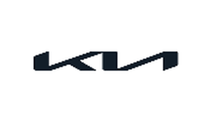
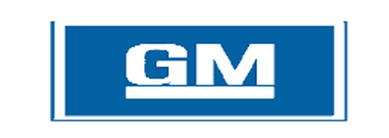
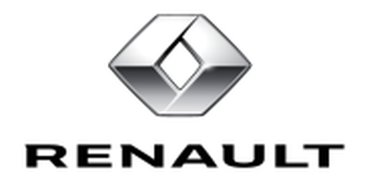
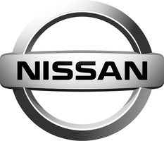
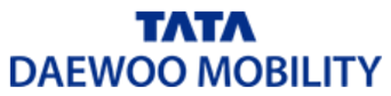
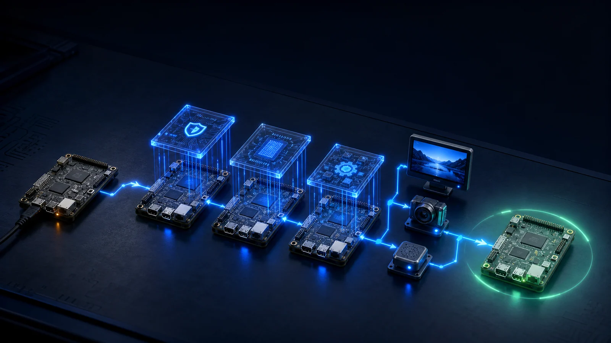
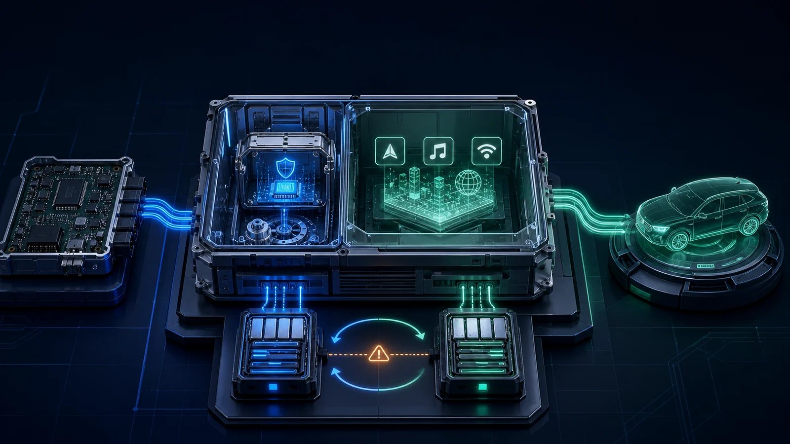
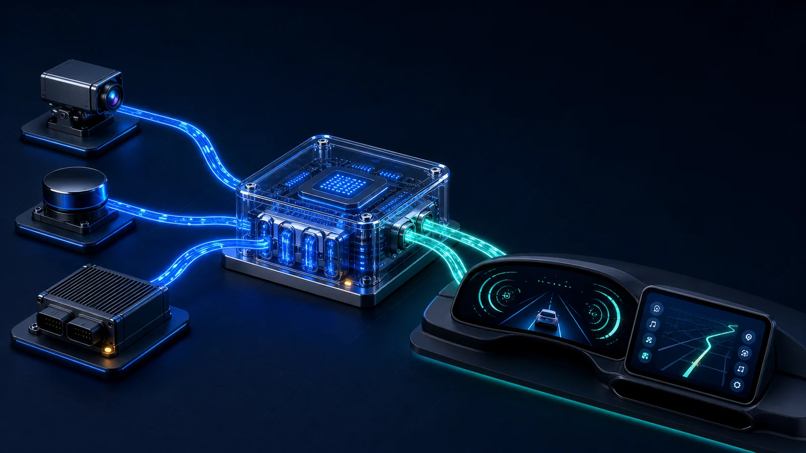
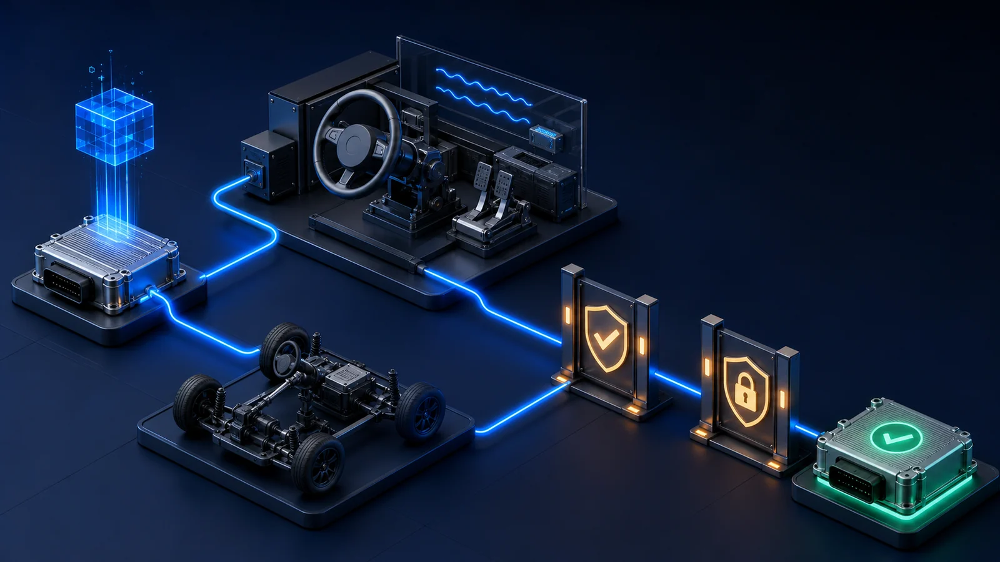

01
요구 분석 · 시스템 설계
기능·
- 차량·디바이스의 기능 요구와 안전 요구(HARA·ASIL)를 분리해 추적 가능한 요구사항으로 정의합니다
- 하드웨어 제약(메모리·전력·발열)을 반영한 SW 아키텍처를 설계하고, 단계별 검증 계획을 함께 수립합니다
- AUTOSAR Classic/Adaptive 등 표준 아키텍처 적용 여부를 프로젝트 특성에 맞춰 결정합니다
차량 전장·
완성차·

ccOS/AAOS 기반고급형·

QNX 기반Middleware 개발

PM & PP

PM & Broadcast


Telematics / CCSCSMS·

MCU / Secure Lib 개발
ISO/SAE 21434 절차에 맞춰 위협 분석과 보안 설계·
무선 업데이트와 스마트폰 연동, 차량 통신 기능을 개발하고 검증합니다.
AUTOSAR 기반 공통 컴포넌트와 진단·
계기판·
요구 분석과 보드 브링업부터 기능안전·

Global Tech
글로벌 기술을 프로젝트에 맞게 선정하고, 국내 공급·
차량 전장과 산업용 디바이스 SW를 요구 분석부터 양산 검증까지 개발합니다. 하드웨어 제약과 안전·
기능·

타깃 보드에서 부트로더·

실시간성·

차량 화면과 센서·

가상 장비 시험(HIL)·

부팅·
보안 기능은 결국 제어기 소프트웨어 위에서 동작합니다. 통신·
제품 단계와 인증 일정에 따라 필요한 부분만 맡거나, 설계부터 양산까지 함께 갑니다.
표준 기반 보안요소·
Secure Boot와 시스템 하드닝, 차량용 암호화 모듈 설계와 보안 API 구현, 펌웨어 보안 기능 개발 및 기능 검증
무선·
사이버보안 관리체계 수립 지원, 위협분석 산출과 요구사항·
통합제어기 CDD·
여러 부품에 공통으로 적용할 보안 계층을 설계·
모든 모듈에 같은 무게의 보안을 넣으면 원가와 성능이 함께 무너집니다. 외부 연결을 담당하는 통신·
단계적 확장을 전제로 설계합니다 — ① 통신·
규제 대응 문서와 실제 구현을 같은 팀이 맡습니다.
프로젝트에 따라 AX·
영상 인식 교통·
설비 이상 조기감지·
영상·
모바일 금융·
차량 전장 양산과 보안 대응에서 무엇을 어디까지 수행했는지 대표 프로젝트로 확인할 수 있습니다.